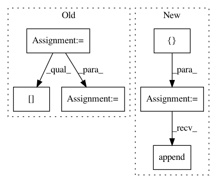

3007e9a06ceeea9d3e1cc1b02adf67ab28d8adda,mimic3models/common_utils.py,DeepSupervisionDataLoader,__init__,#DeepSupervisionDataLoader#Any#Any#Any#,113
Before Change
j += 1
i = j
mas.append([cur_stay, cur_positions, cur_labels])
self._data = mas
if small_part:
self._data = self._data[:256]
mas = []
for (stay, positions, labels) in self._data:
X, header = self._read_timeseries(stay)
mas.append([X, positions, labels])
self._data = mas
def _read_timeseries(self, ts_filename):
ret = []
After Change
self._data = [(x, float(t), y) for (x, t, y) in self._data]
self._data = sorted(self._data)
mas = {"X": [],
"ts": [],
"ys": [],
"name": []}
i = 0
while i < len(self._data):
j = i
cur_stay = self._data[i][0]
cur_ts = []
cur_labels = []
while j < len(self._data) and self._data[j][0] == cur_stay:
cur_ts.append(self._data[j][1])
cur_labels.append(self._data[j][2])
j += 1
cur_X, header = self._read_timeseries(cur_stay)
mas["X"].append(cur_X)
mas["ts"].append(cur_ts)
mas["ys"].append(cur_labels)
mas["name"].append(cur_stay)
i = j
if small_part and len(mas["name"]) == 256:
break
In pattern: SUPERPATTERN
Frequency: 3
Non-data size: 6
Instances
Project Name: YerevaNN/mimic3-benchmarks
Commit Name: 3007e9a06ceeea9d3e1cc1b02adf67ab28d8adda
Time: 2018-01-17
Author: harhro@gmail.com
File Name: mimic3models/common_utils.py
Class Name: DeepSupervisionDataLoader
Method Name: __init__
Project Name: apple/coremltools
Commit Name: d1e6e624ef891543c5bba32bb0a696d350714693
Time: 2019-08-20
Author: smq@apple.com
File Name: coremltools/converters/nnssa/coreml/shapes.py
Class Name:
Method Name: _squeeze
Project Name: rail-berkeley/softlearning
Commit Name: 9634be247a33280cfc60b439e6cb61147bd79f56
Time: 2018-01-29
Author: haarnoja@berkeley.edu
File Name: softqlearning/misc/sampler.py
Class Name:
Method Name: rollout